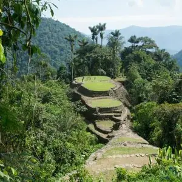

.png)
Berlin Christmas Markets

Berlin's Christmas markets offer an enchanting escape into the holiday season, filling the city
with
warmth,
joy, and festive cheer. From picturesque settings to diverse entertainment and delicious treats,
each
market
brings a unique experience. Whether you're shopping for gifts, enjoying seasonal delicacies, or
simply
soaking in the magical atmosphere, these Berlin Christmas markets promise to make your winter
visit
truly
unforgettable. Embrace the holiday spirit and make cherished memories in this winter wonderland!
Hiking in Cyprus: Best Hiking Trails and Travel Itinerary
Hiking in Cyprus may not be top of mind when travelers consider this Mediterranean island for
vacation.
Most associate it with its beaches and resorts. However, our recent visit to Cyprus illustrates that
the
country not only offers sea, sun and deep history, but a variety of natural landscapes and
geological
diversity that makes hiking on the island a delight.
We share here our favorite hiking trails in Cyprus, from coastal to mountain hikes. Whether you're
interested in a hiking vacation or just to include a hike into your visit to Cyprus, here is all the
information you need to plan your trip.
Exploring Lazio: Off-the-Beaten Path Italy Outside Rome
The tires of our e-bikes rested on the cobbles of what we imagined was an old imperial road. Our
early
morning cycle had wound up through the meadows and canopies of a nature reserve carved out along the
banks of the Tiber River in central Italy. A long stretch of road opened revealing veils of mist
rising
above the bends of water below.
The Lost City, Colombia: A Guide to Hiking to La Ciudad Perdida

The hike to the Lost City in northern Colombia takes you 46km (28 miles) round trip through the
jungles,
hills and river valleys of the Sierra Nevada Mountains. We’d had our sights set on the Lost City
Trek
for years, so expectations had built up. Fortunately, the challenge, landscape, and experience
exceeded
so many of them.
This Lost City Columbia Hiking Guide shares why that is and includes a day-by-day overview of the
Lost
City Trek, all you need to know to choose the right tour, how to pack and organize so that you can
enjoy
the Ciudad Perdida and this multi-day hike to the fullest.
Bhutan Trekking: The Druk Path Trek and New Trans Bhutan Trail
What is it like to go trekking in Bhutan? To go on a Himalayan mountain adventure with wide open
landscapes, snow-covered peaks, Buddhist temples, prayer flags, high altitude camping and alpine
lakes?
We share a taste of trekking in Bhutan with our Druk Path Trek experience — including what you’ll
experience day by day, difficulty, how to pack and organize a Bhutan trek, what to expect from a
winter
trek, and why this is one of the most popular treks in Bhutan.